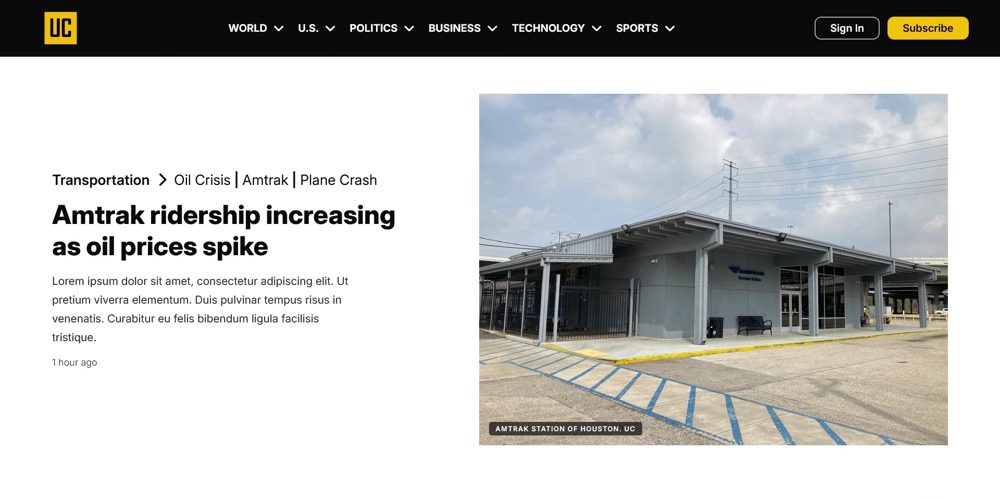
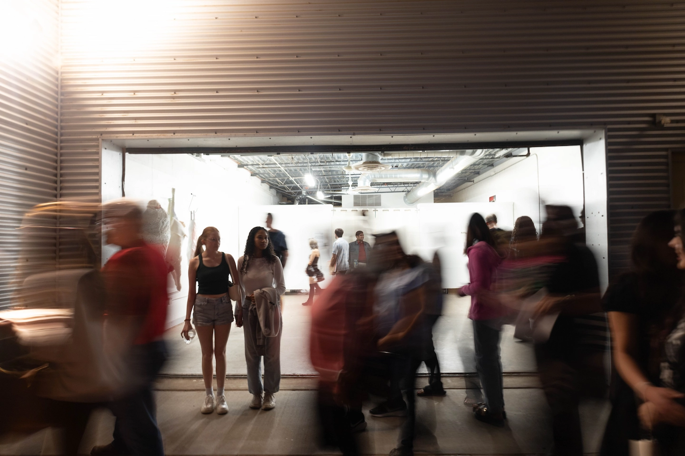
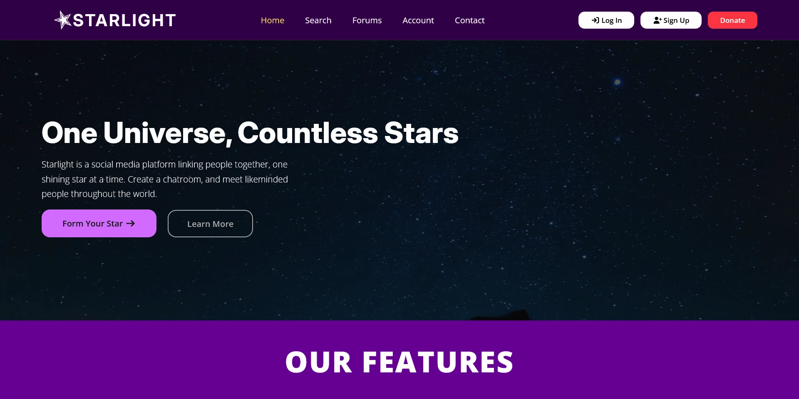
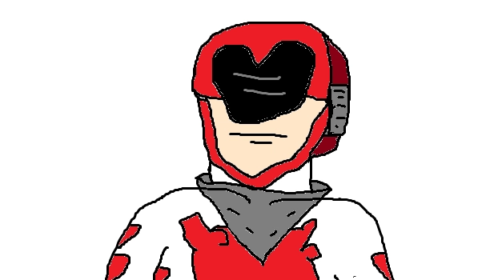
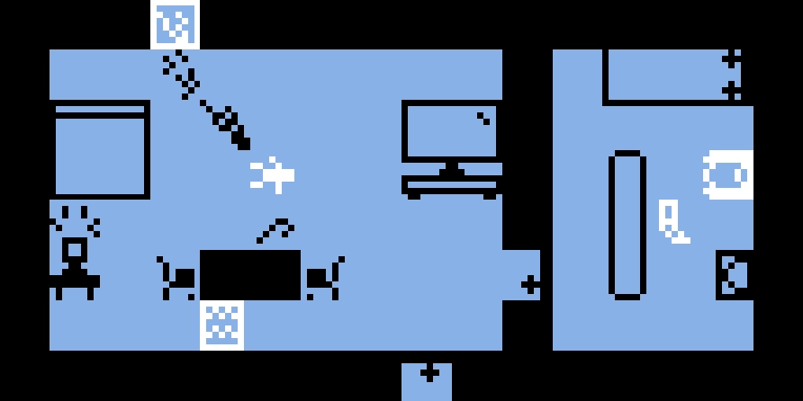

Web DevWeb Dev · 5 min read
News Site: United Chronicle
A project on designing various important pages of a fictional social media website. AI was only used for the vectorization of the logo.
Hello. I am
A bilingual writer, designer, video editor, and photographer, handling creative projects cleanly and diligently.
I am a 1st Generation American born in Houston, Texas, a son of Salvadoran immigrants. As a writer, I analyze and create media through a technical, historical, and cultural lens. I am working towards a Bachelor of Arts in Creative Media Industries, granting me a diverse skillset tailor-made to navigate the modern media landscape.
I have travelled internationally four times, three when visiting El Salvador, and once when going to Ireland to study abroad. Through those trips, I began to internalize the value of cultural mythologies, the importance of maintaining personal histories, and how individuals interact with foreign cultures.

Served as Ambassador for the Tech Philosophy Club from Fall '25 to Spring '26, presenting and facilitating philosophical conversations.
Worked as Script Supervisor for the Tech Creative Media Association short film "Go For It" (2025).
Served as leader in Lone Star College - Kingwood's Honors College Leadership Program during Spring '24.

Web DevWeb Dev · 5 min read
A project on designing various important pages of a fictional social media website. AI was only used for the vectorization of the logo.

Web DevWeb Dev · 3 min read
A project on designing the landing page of a fictional social media website. AI was only used for the vectorization of the logo.

WritingWriting · 10 min read
A case study in developing an original character, Heart-Man. Explains how to translate him into interactive media, such as a video game.
Editing · 4 min watch
An interview with my partner about dealing with physical disabilities. A showcase of my editing and videography skills.

Game DevGame Dev · 6 min playtime
Less truly is more. Discover how top agencies are stripping back visual noise to create brands that resonate in the age of information overload.
Design · 3 min read
Less truly is more. Discover how top agencies are stripping back visual noise to create brands that resonate in the age of information overload.